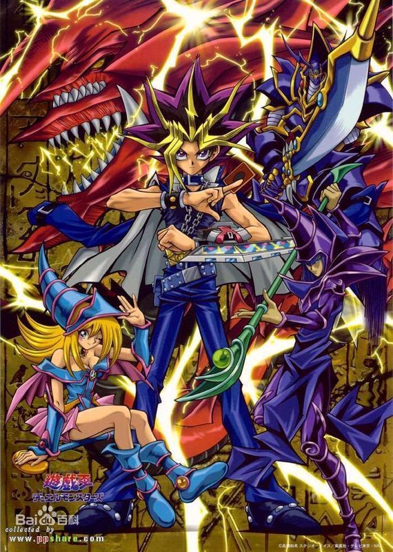

<body style="background-image: url(jky.jpg);">
<h1  style="background-color:red;">游戏王</h1>
  
  <p1  id="content" style="position:absolute;left:500px;height:1000px;width: 800px;">
    <br><br><br><br>《游戏王》是由ぎゃろっぷ制作的电视动画，于2000~2004年之间在东京电视台播出，全224集。<br> <br>
    改编自高桥和希创作的漫画《游戏王》第8~38卷的以卡牌怪兽决斗和七件千年神器为主线的故事，但因为中途漫画故事情节进度跟不上，故加插大量漫画没有的剧情和人物。此举为脱离原作独立创作故事奠定下基础。<br> <br>
    为纪念《游戏王》诞生20周年，日本将从2015年2月7日起，将该电视动画重制，推出《游戏王-怪兽之决斗》</div><br> <br> 
  </p1>
  
  <br><br><br><br><br><br><br>
  <ul>
  {% for author in site.authors %}
    <li>
      <h2><a href="{{ author.url }}">{{ author.name }}</a></h2>
      <h3>{{ author.position }}</h3>
      <p>{{ author.content | markdownify }}</p>
    </li>
  {% endfor %}
</ul>